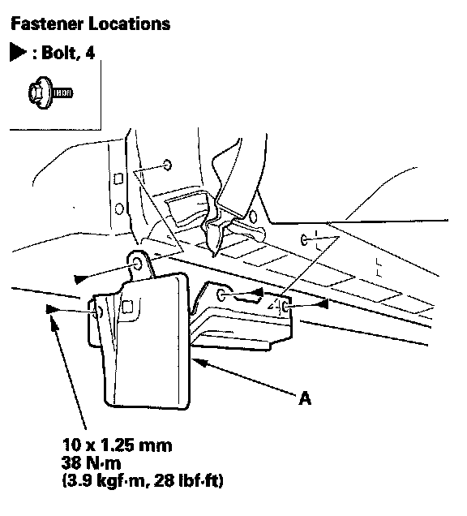

Left Front Splash Guard Reinforcement
Left Front Splash Guard Reinforcement Replacement1. Remove these items:
- Left front inner fender, as needed
- Left side sill panel

2. Remove the bolts, then remove the left front splash guard reinforcement (A). Take care not to scratch the body.
3. Install the reinforcement in the reverse order of removal.